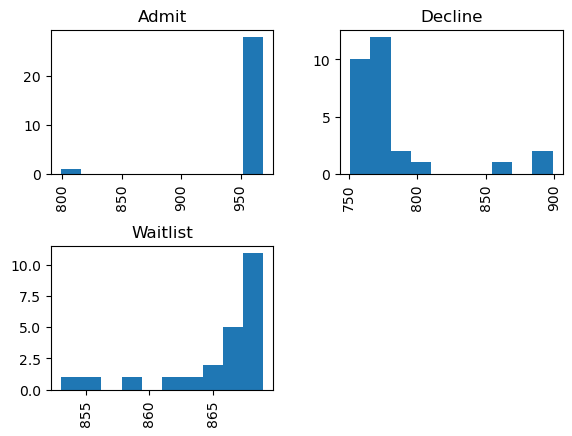
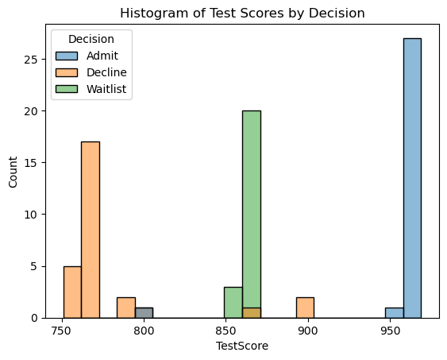
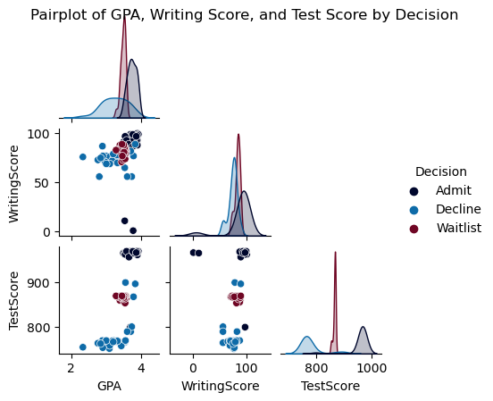

import numpy as np
import pandas as pd
import seaborn as sns
import matplotlib.pyplot as pltData Cleaning
df = pd.read_csv('../data/clean_data.csv')
df.shape(80, 8)df.isna().sum()Decision 0
State 0
GPA 0
WorkExp 0
TestScore 0
WritingScore 0
Gender 0
VolunteerLevel 0
dtype: int64df = df[df['Decision'].notna()]
df.head(10)| Decision | State | GPA | WorkExp | TestScore | WritingScore | Gender | VolunteerLevel | |
|---|---|---|---|---|---|---|---|---|
| 0 | Admit | California | 3.90 | 6.7 | 962.0 | 100 | 1.0 | 0 |
| 1 | Admit | Florida | 3.80 | 1.4 | 969.0 | 97 | 1.0 | 4 |
| 2 | Admit | Colorado | 3.60 | 0.9 | 969.0 | 97 | 0.0 | 2 |
| 3 | Admit | California | 3.88 | 1.5 | 967.0 | 95 | 1.0 | 5 |
| 4 | Admit | California | 3.70 | 1.2 | 969.0 | 94 | 1.0 | 2 |
| 5 | Admit | Florida | 3.90 | 4.7 | 961.0 | 93 | 1.0 | 1 |
| 6 | Admit | California | 3.70 | 1.4 | 966.0 | 94 | 1.0 | 0 |
| 7 | Admit | Florida | 3.93 | 0.8 | 969.0 | 99 | 1.0 | 4 |
| 8 | Admit | Colorado | 3.60 | 1.2 | 967.0 | 94 | 1.0 | 2 |
| 9 | Admit | California | 3.69 | 3.2 | 967.0 | 93 | 0.0 | 3 |
df.isna().sum()Decision 0
State 0
GPA 0
WorkExp 0
TestScore 0
WritingScore 0
Gender 0
VolunteerLevel 0
dtype: int64df = df.dropna()# remove nonsensical answers in Decision and Gender columns
df['Decision'].unique()
df = df[df['Decision'] != 'Banana']
print(df.shape)
df = df.drop(df[df["Gender"] < 0].index)
df = df.drop(df[df["WorkExp"] > 50].index)
df = df.drop(df[df["GPA"] > 5].index)
df.head()(80, 8)| Decision | State | GPA | WorkExp | TestScore | WritingScore | Gender | VolunteerLevel | |
|---|---|---|---|---|---|---|---|---|
| 0 | Admit | California | 3.90 | 6.7 | 962.0 | 100 | 1.0 | 0 |
| 1 | Admit | Florida | 3.80 | 1.4 | 969.0 | 97 | 1.0 | 4 |
| 2 | Admit | Colorado | 3.60 | 0.9 | 969.0 | 97 | 0.0 | 2 |
| 3 | Admit | California | 3.88 | 1.5 | 967.0 | 95 | 1.0 | 5 |
| 4 | Admit | California | 3.70 | 1.2 | 969.0 | 94 | 1.0 | 2 |
# capitalize all states
df.State = df.State.str.title()
df['State'] = df['State'].replace('New york', 'New York')# Save to csv
df.to_csv("../data/clean_data.csv", index=False)Visualizations
# Hide output with -q
!pip install -q altairdecision_count = df.groupby(['Decision', 'State']).size().reset_index()
decision_count = decision_count.rename(columns={0: 'Count'})
decision_count| Decision | State | Count | |
|---|---|---|---|
| 0 | Admit | California | 9 |
| 1 | Admit | Colorado | 8 |
| 2 | Admit | Florida | 11 |
| 3 | Admit | Utah | 1 |
| 4 | Decline | California | 1 |
| 5 | Decline | Colorado | 6 |
| 6 | Decline | Florida | 13 |
| 7 | Decline | Mississippi | 1 |
| 8 | Decline | Oregon | 1 |
| 9 | Decline | Utah | 2 |
| 10 | Decline | Virginia | 4 |
| 11 | Waitlist | Alabama | 1 |
| 12 | Waitlist | California | 2 |
| 13 | Waitlist | Colorado | 4 |
| 14 | Waitlist | Florida | 11 |
| 15 | Waitlist | New York | 1 |
| 16 | Waitlist | Utah | 3 |
| 17 | Waitlist | Vermont | 1 |
import altair as alt
unique_states = decision_count['State'].unique().tolist()
# Dropdown selection
input_dropdown = alt.binding_select(options=[None] + unique_states, labels = ['All'] + unique_states, name='State')
selection = alt.selection_single(fields=['State'], bind=input_dropdown)
decision_bar = alt.Chart(decision_count).transform_filter(
selection
).mark_bar().encode(
alt.X('Decision:O', title='Decision'),
alt.Y('Count:Q', title='Count'),
).add_selection(selection).interactive()
chart_title = "Bar Chart of Decision Results Counts for States"
decision_bar = decision_bar.properties(title=chart_title)
decision_barc:\Users\theda\anaconda3\Lib\site-packages\altair\utils\deprecation.py:65: AltairDeprecationWarning: 'selection_single' is deprecated. Use 'selection_point'
warnings.warn(message, AltairDeprecationWarning, stacklevel=1)
c:\Users\theda\anaconda3\Lib\site-packages\altair\utils\deprecation.py:65: AltairDeprecationWarning: 'add_selection' is deprecated. Use 'add_params' instead.
warnings.warn(message, AltairDeprecationWarning, stacklevel=1)custom_palette = ['#00072D', '#0A2472', '#0E6BA8', '#A6E1FA', '#99ABC5', '#8B748F', '#6F0624']import altair as alt
unique_states = decision_count['State'].unique().tolist()
# # Dropdown selection
# input_dropdown = alt.binding_select(options=[None] + unique_states, labels = ['All'] + unique_states, name='State')
# selection = alt.selection_single(fields=['State'], bind=input_dropdown)
decision_bar = alt.Chart(decision_count).mark_bar().encode(
x=alt.X('Decision:O', title='Decision', axis=alt.Axis(labelAngle=0), sort='-y'),
y=alt.Y('Count:Q', title='Count'),
xOffset='State',
color=alt.Color('State:N', sort=alt.EncodingSortField(field='Count', op='sum', order='descending'), scale=alt.Scale(range=custom_palette))
)
chart_title = "Bar Chart of Decision Results Counts for States"
decision_bar = decision_bar.properties(title=chart_title)
decision_bardf.hist('TestScore', by='Decision')array([[<Axes: title={'center': 'Admit'}>,
<Axes: title={'center': 'Decline'}>],
[<Axes: title={'center': 'Waitlist'}>, <Axes: >]], dtype=object)
sns.histplot(x="TestScore", hue="Decision", data=df, bins=20).set(title='Histogram of Test Scores by Decision')[Text(0.5, 1.0, 'Histogram of Test Scores by Decision')]
# Dropdown selection
input_dropdown = alt.binding_select(options=[None] + unique_states, labels = ['All'] + unique_states, name='State')
selection = alt.selection_single(fields=['State'], bind=input_dropdown)
gpa_bar = alt.Chart(df).transform_filter(
selection
).mark_bar(
opacity=0.5,
binSpacing=0
).encode(
alt.X('GPA:Q'),
alt.Y('count()', title='Count of Occurrences'),
alt.Color('Decision:N')
).add_selection(selection).interactive()
chart_title = "Histogram of GPA by Decision Result for States"
gpa_bar = gpa_bar.properties(title=chart_title)
gpa_barc:\Users\theda\anaconda3\Lib\site-packages\altair\utils\deprecation.py:65: AltairDeprecationWarning: 'selection_single' is deprecated. Use 'selection_point'
warnings.warn(message, AltairDeprecationWarning, stacklevel=1)
c:\Users\theda\anaconda3\Lib\site-packages\altair\utils\deprecation.py:65: AltairDeprecationWarning: 'add_selection' is deprecated. Use 'add_params' instead.
warnings.warn(message, AltairDeprecationWarning, stacklevel=1)custom_palette = ['#00072D', '#0A2472', '#0E6BA8', '#A6E1FA', '#99ABC5', '#8B748F', '#6F0624']scatter_cols = df[['State', 'Decision', 'GPA', 'WritingScore', 'TestScore']]
tri_color = [custom_palette[0], custom_palette[2], custom_palette[6]]
g = sns.pairplot(scatter_cols, hue='Decision', palette=tri_color, corner=True, height=1.5)
g.fig.suptitle('Pairplot of GPA, Writing Score, and Test Score by Decision')
plt.savefig("../website/images/decision_pairplot.png")
Maps
#calculate averages of all numeric columns
num_cols = df[['State', 'GPA', 'WorkExp', 'TestScore', 'WritingScore', 'VolunteerLevel']]
avg_df = num_cols.groupby('State').mean().reset_index()
state_abbr = {
'Alabama': 'AL',
'California': 'CA',
'Colorado': 'CO',
'Florida': 'FL',
'Georgia': 'GA',
'Mississippi': 'MS',
'New York': 'NY',
'Oregon': 'OR',
'Utah': 'UT',
'Vermont': 'VT',
'Virginia': 'VA'
}
avg_df['State_Abbr'] = avg_df['State'].map(state_abbr)
avg_df = avg_df.drop(columns=['State'])
avg_df = avg_df.rename(columns={'State_Abbr': 'State'})
avg_df| GPA | WorkExp | TestScore | WritingScore | VolunteerLevel | State | |
|---|---|---|---|---|---|---|
| 0 | 3.410000 | 1.200000 | 868.000000 | 85.000000 | 0.000000 | AL |
| 1 | 3.600833 | 2.808333 | 916.166667 | 90.833333 | 2.666667 | CA |
| 2 | 3.467222 | 1.844444 | 877.055556 | 80.000000 | 2.444444 | CO |
| 3 | 3.559143 | 2.117143 | 872.571429 | 80.428571 | 2.457143 | FL |
| 4 | 2.910000 | 6.200000 | 753.000000 | 77.000000 | 1.000000 | MS |
| 5 | 3.550000 | 2.200000 | 866.000000 | 74.000000 | 1.000000 | NY |
| 6 | 2.900000 | 0.900000 | 769.000000 | 87.000000 | 4.000000 | OR |
| 7 | 3.443333 | 1.250000 | 850.666667 | 78.333333 | 2.500000 | UT |
| 8 | 3.530000 | 3.300000 | 862.000000 | 85.000000 | 1.000000 | VT |
| 9 | 3.142500 | 2.375000 | 766.000000 | 76.500000 | 3.250000 | VA |
import plotly.express as px
fig = px.choropleth(avg_df, locationmode="USA-states",
locations=avg_df['State'],
scope="usa",
color=avg_df['GPA'],
hover_data={"State": True, "GPA": True},
labels={"GPA": "Selected Variable"},
color_continuous_scale=custom_palette
)
dropdown = []
for col in avg_df.columns[:-1]:
dropdown.append({'label': col, 'method': 'update', 'args': [{'z': [avg_df[col]]}]})
fig.update_layout(updatemenus=[{'buttons': dropdown, 'direction': 'down', 'showactive': True}],
title='Choropleth Map of Average Selected Variable')
fig.update_coloraxes(colorbar_title=dict(text='Selected Variable'))
fig.show()Unable to display output for mime type(s): application/vnd.plotly.v1+jsonimport plotly.express as px
admit = df[df['Decision'] == 'Admit']
num_cols = admit[['State', 'GPA', 'WorkExp', 'TestScore', 'WritingScore', 'VolunteerLevel']]
avg_admit = num_cols.groupby('State').mean().reset_index()
avg_admit['State_Abbr'] = avg_admit['State'].map(state_abbr)
#avg_admit = avg_admit.drop(columns=['State'])
#avg_admit = avg_admit.rename(columns={'State_Abbr': 'State'})
fig = px.choropleth(avg_admit, locationmode="USA-states",
locations=avg_admit['State_Abbr'],
scope="usa",
color=avg_admit['GPA'],
hover_data={"State_Abbr": True, "GPA": True},
labels={"GPA": "Selected Variable"},
color_continuous_scale=custom_palette
)
dropdown = []
for col in avg_admit.columns[:-1]:
if col != 'State':
dropdown.append({'label': col, 'method': 'update', 'args': [{'z': [avg_admit[col]]}]})
fig.update_layout(updatemenus=[{'buttons': dropdown, 'direction': 'down', 'showactive': True}],
title='Choropleth Map of Average Selected Variable for Admitted Students')
fig.update_coloraxes(colorbar_title=dict(text='Selected Variable'))
fig.show()Unable to display output for mime type(s): application/vnd.plotly.v1+jsonimport plotly.express as px
decline = df[df['Decision'] == 'Decline']
num_cols = decline[['State', 'GPA', 'WorkExp', 'TestScore', 'WritingScore', 'VolunteerLevel']]
avg_decline = num_cols.groupby('State').mean().reset_index()
avg_decline['State_Abbr'] = avg_decline['State'].map(state_abbr)
# avg_decline = avg_decline.drop(columns=['State'])
# avg_decline = avg_decline.rename(columns={'State_Abbr': 'State'})
fig = px.choropleth(avg_decline, locationmode="USA-states",
locations=avg_decline['State_Abbr'],
scope="usa",
color=avg_decline['GPA'],
hover_data={"State_Abbr": True, "GPA": True},
labels={"GPA": "Selected Variable"},
color_continuous_scale=custom_palette
)
dropdown = []
for col in avg_decline.columns[:-1]:
if col != 'State':
dropdown.append({'label': col, 'method': 'update', 'args': [{'z': [avg_decline[col]]}]})
fig.update_layout(updatemenus=[{'buttons': dropdown, 'direction': 'down', 'showactive': True}],
title='Choropleth Map of Average Selected Variable for Declined Students')
fig.update_coloraxes(colorbar_title=dict(text='Selected Variable'))
fig.show()Unable to display output for mime type(s): application/vnd.plotly.v1+jsonfrom vega_datasets import data
state_id_dict = dict(zip(data.population_engineers_hurricanes()["state"], data.population_engineers_hurricanes()["id"]))
avg_admit["StateID"] = avg_admit["State"].map(state_id_dict)
avg_decline["StateID"] = avg_decline["State"].map(state_id_dict)import altair as alt
from vega_datasets import data
states = alt.topo_feature('https://raw.githubusercontent.com/vega/vega-datasets/master/data/us-10m.json', 'states')
click = alt.selection_multi(fields = ["State"])
state_id_dict = dict(zip(data.population_engineers_hurricanes()["state"], data.population_engineers_hurricanes()["id"]))
avg_admit["StateID"] = avg_admit["State"].map(state_id_dict)
avg_decline["StateID"] = avg_decline["State"].map(state_id_dict)
existing_states = alt.Chart(states).mark_geoshape(stroke='black').encode(
color = alt.Color("GPA:Q", scale=alt.Scale(range=custom_palette)),
tooltip = ["State:N", "GPA:Q"],
opacity = alt.condition('isValid(datum.GPA)', alt.value(1), alt.value(0.2)),
).transform_lookup(
lookup = "id",
from_ = alt.LookupData(avg_admit, "StateID", list(avg_admit.columns))
).properties(width = 333, height = 200, title="Average Admitted GPA by State").add_selection(click).project(type = "albersUsa").interactive()
missing_states = (
alt.Chart(states)
.mark_geoshape(fill = "grey", stroke = "white")
.encode(opacity=alt.condition("isValid(datum.GPA)", alt.value(0), alt.value(0.2))).add_selection(click).project(type = "albersUsa")
)
admit_map = existing_states + missing_states
admit_map = admit_map.encode(
tooltip= ["State:N", "GPA:Q"]
).transform_lookup(
lookup="id",
from_=alt.LookupData(avg_admit, "StateID", list(avg_admit.columns))
).interactive()
existing_states = alt.Chart(states).mark_geoshape(stroke='black').encode(
color = alt.Color("GPA:Q", scale=alt.Scale(range=custom_palette)),
tooltip = ["State:N", "GPA:Q"],
opacity = alt.condition('isValid(datum.GPA)', alt.value(1), alt.value(0.2)),
).transform_lookup(
lookup = "id",
from_ = alt.LookupData(avg_decline, "StateID", list(avg_decline.columns))
).properties(width = 333, height = 200, title="Average Declined GPA by State").add_selection(click).project(type = "albersUsa").interactive()
missing_states = (
alt.Chart(states)
.mark_geoshape(fill = "grey", stroke = "white")
.encode(opacity=alt.condition("isValid(datum.GPA)", alt.value(0), alt.value(0.2))).add_selection(click).project(type = "albersUsa")
)
decline_map = existing_states + missing_states
decline_map = decline_map.encode(
tooltip= ["State:N", "GPA:Q"]
).transform_lookup(
lookup="id",
from_=alt.LookupData(avg_decline, "StateID", list(avg_decline.columns))
).interactive()
admit_map | decline_mapc:\Users\theda\anaconda3\Lib\site-packages\altair\utils\deprecation.py:65: AltairDeprecationWarning:
'selection_multi' is deprecated. Use 'selection_point'
c:\Users\theda\anaconda3\Lib\site-packages\altair\utils\deprecation.py:65: AltairDeprecationWarning:
'add_selection' is deprecated. Use 'add_params' instead.
import altair as alt
from vega_datasets import data
states = alt.topo_feature('https://raw.githubusercontent.com/vega/vega-datasets/master/data/us-10m.json', 'states')
click = alt.selection_multi(fields = ["State"])
state_id_dict = dict(zip(data.population_engineers_hurricanes()["state"], data.population_engineers_hurricanes()["id"]))
avg_admit["StateID"] = avg_admit["State"].map(state_id_dict)
avg_decline["StateID"] = avg_decline["State"].map(state_id_dict)
existing_states = alt.Chart(states).mark_geoshape(stroke='black').encode(
color = alt.Color("TestScore:Q", scale=alt.Scale(range=custom_palette)),
tooltip = ["State:N", "TestScore:Q"],
opacity = alt.condition('isValid(datum.TestScore)', alt.value(1), alt.value(0.2)),
).transform_lookup(
lookup = "id",
from_ = alt.LookupData(avg_admit, "StateID", list(avg_admit.columns))
).properties(width = 333, height = 200, title="Average Admitted Test Score by State").add_selection(click).project(type = "albersUsa").interactive()
missing_states = (
alt.Chart(states)
.mark_geoshape(fill = "grey", stroke = "white")
.encode(opacity=alt.condition("isValid(datum.TestScore)", alt.value(0), alt.value(0.2))).add_selection(click).project(type = "albersUsa")
)
admit_map = existing_states + missing_states
admit_map = admit_map.encode(
tooltip= ["State:N", "TestScore:Q"]
).transform_lookup(
lookup="id",
from_=alt.LookupData(avg_admit, "StateID", list(avg_admit.columns))
).interactive()
existing_states = alt.Chart(states).mark_geoshape(stroke='black').encode(
color = alt.Color("TestScore:Q", scale=alt.Scale(range=custom_palette)),
tooltip = ["State:N", "TestScore:Q"],
opacity = alt.condition('isValid(datum.TestScore)', alt.value(1), alt.value(0.2)),
).transform_lookup(
lookup = "id",
from_ = alt.LookupData(avg_decline, "StateID", list(avg_decline.columns))
).properties(width = 333, height = 200, title="Average Declined Test Score by State").add_selection(click).project(type = "albersUsa").interactive()
missing_states = (
alt.Chart(states)
.mark_geoshape(fill = "grey", stroke = "white")
.encode(opacity=alt.condition("isValid(datum.TestScore)", alt.value(0), alt.value(0.2))).add_selection(click).project(type = "albersUsa")
)
decline_map = existing_states + missing_states
decline_map = decline_map.encode(
tooltip= ["State:N", "TestScore:Q"]
).transform_lookup(
lookup="id",
from_=alt.LookupData(avg_decline, "StateID", list(avg_decline.columns))
).interactive()
admit_map | decline_mapc:\Users\theda\anaconda3\Lib\site-packages\altair\utils\deprecation.py:65: AltairDeprecationWarning:
'selection_multi' is deprecated. Use 'selection_point'
c:\Users\theda\anaconda3\Lib\site-packages\altair\utils\deprecation.py:65: AltairDeprecationWarning:
'add_selection' is deprecated. Use 'add_params' instead.
melted_admit = pd.melt(avg_admit, id_vars=['StateID'], var_name='variable', value_name='value')
melted_decline = pd.melt(avg_decline, id_vars=['StateID'], var_name='variable', value_name='value')
remove = ['State_Abbr', 'State']
melted_admit = melted_admit[~melted_admit['variable'].isin(remove)]
melted_admit| StateID | variable | value | |
|---|---|---|---|
| 4 | 6 | GPA | 3.764444 |
| 5 | 8 | GPA | 3.71875 |
| 6 | 12 | GPA | 3.731818 |
| 7 | 49 | GPA | 3.78 |
| 8 | 6 | WorkExp | 3.111111 |
| 9 | 8 | WorkExp | 1.575 |
| 10 | 12 | WorkExp | 1.590909 |
| 11 | 49 | WorkExp | 1.2 |
| 12 | 6 | TestScore | 946.444444 |
| 13 | 8 | TestScore | 967.375 |
| 14 | 12 | TestScore | 966.181818 |
| 15 | 49 | TestScore | 968.0 |
| 16 | 6 | WritingScore | 94.444444 |
| 17 | 8 | WritingScore | 82.375 |
| 18 | 12 | WritingScore | 87.181818 |
| 19 | 49 | WritingScore | 87.0 |
| 20 | 6 | VolunteerLevel | 2.555556 |
| 21 | 8 | VolunteerLevel | 2.0 |
| 22 | 12 | VolunteerLevel | 2.181818 |
| 23 | 49 | VolunteerLevel | 2.0 |
existing_states = alt.Chart(states).mark_geoshape(stroke='black').encode(
color=alt.Color("value:Q", scale=alt.Scale(range=custom_palette)),
tooltip=["State:N", "value:Q"],
opacity=alt.condition('isValid(datum.value)', alt.value(1), alt.value(0.2)),
).transform_lookup(
lookup="id",
from_=alt.LookupData(melted_admit, "StateID", list(melted_admit.columns))
).properties(width=333, height=200, title="blah")
missing_states = (
alt.Chart(states)
.mark_geoshape(fill = "grey", stroke = "white")
.encode(opacity=alt.condition("isValid(datum.Rate)", alt.value(0), alt.value(0.2))).add_selection(click).project(type = "albersUsa")
)
admit_map = existing_states + missing_states
selector = alt.selection_single(
fields=['variable'],
bind=alt.binding_select(options=list(melted_admit['variable'].unique())),
name='Select Variable'
)
admit_map = admit_map.add_selection(selector).transform_filter(selector)
admit_map = admit_map.add_selection(selector).transform_filter(
selector
).transform_lookup(
lookup='id',
from_=alt.LookupData(melted_admit, "StateID", list(melted_admit.columns))
)
admit_mapimport altair as alt
# melted_admit = pd.melt(avg_admit, id_vars=['State'], var_name='variable', value_name='value')
# melted_decline = pd.melt(avg_decline, id_vars=['StateID'], var_name='variable', value_name='value')
# print(melted_admit.head())
# Create the choropleth map for admitted students
admit_map = alt.Chart(states).mark_geoshape(stroke='black').encode(
color=alt.Color("GPA:Q", scale=alt.Scale(range=custom_palette)),
tooltip=["State:N", "GPA:Q"],
opacity=alt.condition('isValid(datum.GPA)', alt.value(1), alt.value(0.2)),
).transform_lookup(
lookup="id",
from_=alt.LookupData(avg_admit, "StateID", list(avg_admit.columns))
).properties(width=333, height=200, title="Admission Rates by State")
# Create the choropleth map for declined students
decline_map = alt.Chart(states).mark_geoshape(stroke='black').encode(
color=alt.Color("GPA:Q", scale=alt.Scale(range=custom_palette)),
tooltip=["State:N", "GPA:Q"],
opacity=alt.condition('isValid(datum.GPA)', alt.value(1), alt.value(0.2)),
).transform_lookup(
lookup="id",
from_=alt.LookupData(avg_decline, "StateID", list(avg_decline.columns))
).properties(width=333, height=200, title="Rejection Rates by State")
# Create dropdown menu for variable selection
dropdown = alt.binding_select(options=list(avg_admit.columns[:-1])) # Exclude StateID
selector = alt.selection_single(fields=['variable'], bind=dropdown, name='Select Variable')
# Apply dropdown selection to both maps
admit_map = admit_map.add_selection(selector).transform_calculate(variable='datum.variable || "GPA"').transform_filter(selector)
decline_map = decline_map.add_selection(selector).transform_calculate(variable='datum.variable || "GPA"').transform_filter(selector)
# Combine both maps side by side
combined_map = alt.hconcat(admit_map, decline_map)
combined_map State variable value
0 California GPA 3.764444
1 Colorado GPA 3.71875
2 Florida GPA 3.731818
3 Utah GPA 3.78
4 California WorkExp 3.111111c:\Users\theda\anaconda3\Lib\site-packages\altair\utils\deprecation.py:65: AltairDeprecationWarning:
'selection_single' is deprecated. Use 'selection_point'
c:\Users\theda\anaconda3\Lib\site-packages\altair\utils\deprecation.py:65: AltairDeprecationWarning:
'add_selection' is deprecated. Use 'add_params' instead.
from vega_datasets import data
decision_state = df.groupby(['Decision', 'State'])[["GPA"]].count().reset_index()
decision_state = decision_state.rename(columns={'GPA':'StateCount'})
decision_state['DecisionCount'] = decision_state.groupby('Decision')['StateCount'].transform('sum')
decision_state['Rate'] = decision_state['StateCount'] / decision_state['DecisionCount'] * 100
state_id_dict = dict(zip(data.population_engineers_hurricanes()["state"], data.population_engineers_hurricanes()["id"]))
decision_state["StateID"] = decision_state["State"].map(state_id_dict)
decision_state| Decision | State | StateCount | DecisionCount | Rate | StateID | |
|---|---|---|---|---|---|---|
| 0 | Admit | California | 9 | 29 | 31.034483 | 6 |
| 1 | Admit | Colorado | 8 | 29 | 27.586207 | 8 |
| 2 | Admit | Florida | 11 | 29 | 37.931034 | 12 |
| 3 | Admit | Utah | 1 | 29 | 3.448276 | 49 |
| 4 | Decline | California | 1 | 28 | 3.571429 | 6 |
| 5 | Decline | Colorado | 6 | 28 | 21.428571 | 8 |
| 6 | Decline | Florida | 13 | 28 | 46.428571 | 12 |
| 7 | Decline | Mississippi | 1 | 28 | 3.571429 | 28 |
| 8 | Decline | Oregon | 1 | 28 | 3.571429 | 41 |
| 9 | Decline | Utah | 2 | 28 | 7.142857 | 49 |
| 10 | Decline | Virginia | 4 | 28 | 14.285714 | 51 |
| 11 | Waitlist | Alabama | 1 | 23 | 4.347826 | 1 |
| 12 | Waitlist | California | 2 | 23 | 8.695652 | 6 |
| 13 | Waitlist | Colorado | 4 | 23 | 17.391304 | 8 |
| 14 | Waitlist | Florida | 11 | 23 | 47.826087 | 12 |
| 15 | Waitlist | New York | 1 | 23 | 4.347826 | 36 |
| 16 | Waitlist | Utah | 3 | 23 | 13.043478 | 49 |
| 17 | Waitlist | Vermont | 1 | 23 | 4.347826 | 50 |
admit_states = decision_state[decision_state['Decision'] == "Admit"]
decline_states = decision_state[decision_state['Decision'] == "Decline"]states = alt.topo_feature('https://raw.githubusercontent.com/vega/vega-datasets/master/data/us-10m.json', 'states')
click = alt.selection_multi(fields = ["State"])
admit_map = (
alt.Chart(states)
.mark_geoshape(stroke='black')
.encode(
color=alt.Color("Rate:Q", scale=alt.Scale(range=custom_palette)),
opacity=alt.condition('isValid(datum.Rate)', alt.value(1), alt.value(0.2))
)
.transform_lookup(
lookup="id",
from_=alt.LookupData(admit_states, "StateID", list(admit_states.columns))
)
.properties(width=500, height=300, title="Admission Rates by State")
.add_selection(click)
.project(type="albersUsa")
.encode(tooltip=["properties.name:N", "Rate:Q"])
.interactive()
)
# Display the admit_map visualization
admit_mapstates = alt.topo_feature('https://raw.githubusercontent.com/vega/vega-datasets/master/data/us-10m.json', 'states')
click = alt.selection_multi(fields = ["State"])
existing_states = alt.Chart(states).mark_geoshape(stroke='black').encode(
color = alt.Color("Rate:Q", scale=alt.Scale(range=custom_palette)),
tooltip = ["State:N", "Rate:Q"],
opacity = alt.condition('isValid(datum.Rate)', alt.value(1), alt.value(0.2)),
).transform_lookup(
lookup = "id",
from_ = alt.LookupData(admit_states, "StateID", list(admit_states.columns))
).properties(width = 333, height = 200, title="Admission Rates by State").add_selection(click).project(type = "albersUsa").interactive()
missing_states = (
alt.Chart(states)
.mark_geoshape(fill = "grey", stroke = "white")
.encode(opacity=alt.condition("isValid(datum.Rate)", alt.value(0), alt.value(0.2))).add_selection(click).project(type = "albersUsa")
)
admit_map = existing_states + missing_states
admit_map = admit_map.encode(
tooltip= ["State:N", "Rate:Q"]
).transform_lookup(
lookup="id",
from_=alt.LookupData(admit_states, "StateID", list(admit_states.columns))
).interactive()
existing_states = alt.Chart(states).mark_geoshape(stroke='black').encode(
color = alt.Color("Rate:Q", scale=alt.Scale(range=custom_palette)),
tooltip = ["State:N", "Rate:Q"],
opacity = alt.condition('isValid(datum.Rate)', alt.value(1), alt.value(0.2)),
).transform_lookup(
lookup = "id",
from_ = alt.LookupData(decline_states, "StateID", list(decline_states.columns))
).properties(width = 333, height = 200, title="Rejection Rates by State").add_selection(click).project(type = "albersUsa").interactive()
missing_states = (
alt.Chart(states)
.mark_geoshape(fill = "grey", stroke = "white")
.encode(opacity=alt.condition("isValid(datum.Rate)", alt.value(0), alt.value(0.2))).add_selection(click).project(type = "albersUsa")
)
decline_map = existing_states + missing_states
decline_map = decline_map.encode(
tooltip= ["State:N", "Rate:Q"]
).transform_lookup(
lookup="id",
from_=alt.LookupData(decline_states, "StateID", list(decline_states.columns))
).interactive()
admit_map | decline_map